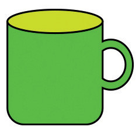
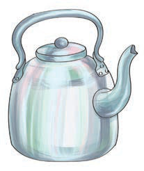

Sura ya Pili
Kutambua sauti na herufi/ Kubainisha kwa kutumia lugha ya alama herufi
b
m
k
d
n
Ninatamka sauti ya herufi b/ Ninabainisha kwa kutumia lugha ya alama herufi b.
Hii ni picha ya nini?
1.
Tamka sauti ya mwanzo ya neno ulilotaja.
2.
Taja maneno mengine yanayoanza na sauti hiyo/ bainisha kwa lugha ya alama maneno mengine yanayoanza na herufi hiyo.
Taja majina ya picha hizi/ Bainishia kwa kutumia lugha ya alama majina ya picha hizi:


1.
Majina yapi yana herufi za mwanzo zinazofanana?
2.
Jina lipi lina herufi ya mwanzo isiyofanana na nyingine?